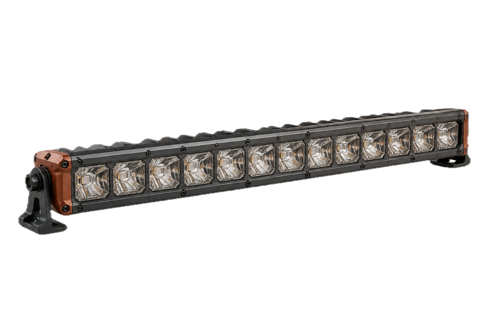
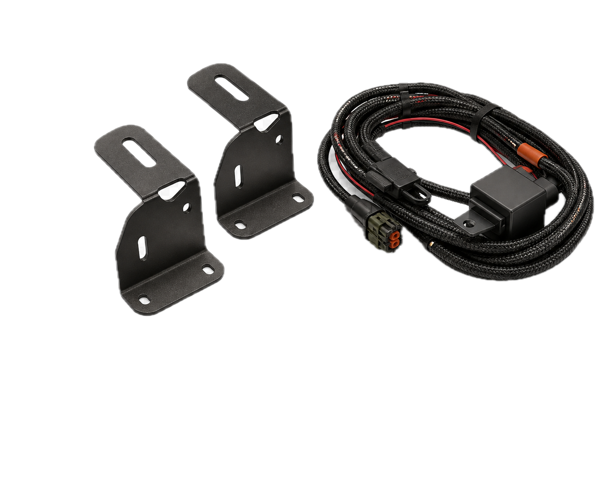
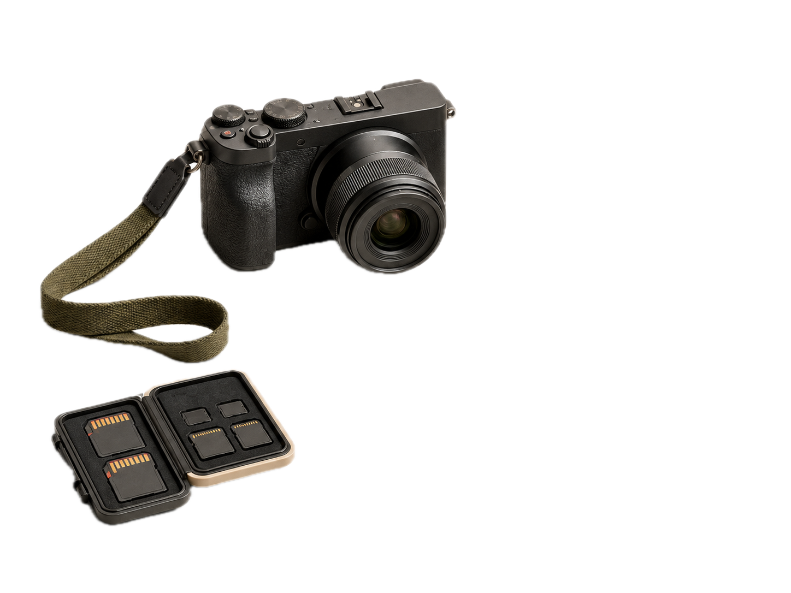

01 / RESEARCH
车主研究机制
把开放回答、概念测试和一对一深访串成同一条证据链。
- 固定研究主干
- 可追问的原话
- 结论置信度
OEDRO USER OPERATIONS / 2026
连接车主研究、用户池、UGC与产品反馈，建立可重复、可追溯的海外用户运营体系。
研究阶段 · 光型尚未测量
THE OPERATING LOOP
每一环都留下来源、授权、车型、参与记录和下一步，不把粉丝数当成用户资产。
CURRENT WORKSPACE
01 / RESEARCH
把开放回答、概念测试和一对一深访串成同一条证据链。
02 / DATA
把订单、车型、授权状态和参与记录连起来，知道“谁愿意再来”。
03 / COMMUNITY
先给高质量车主明确任务与回报，再决定用Facebook Group还是Discord。
04 / PRODUCT LOOP
用可比较的交互测试产品方向，再挑最有信息量的人做深访。
FIELD NOTES / EVIDENCE
只有产品形态没有使用场景，只有用户态度没有安装细节，都不足以支持产品决定。


03 / OWNERS同一产品，三种判断标准。户外使用 · DIY安装 · 工作可靠性

RESEARCH FLOW / LIGHTING
先问真实场景，再展示概念。结构化收集可以比较的信息；只有用户独有的经验，才用开放回答和一次追问。
01不让AI替用户回答
02不把概念图当实测性能
03原始回答与AI标签分开
慢速越野、转弯较多时，哪种视野更有帮助？
请选择更符合真实驾驶判断的一项。
光型研究 · 尚未测量
30 / 60 / 90 DAY DIRECTION
建议推进顺序 · 时间与KPI待批准
PHASE 01
退出条件 能说清“问谁、问什么、支持哪个决定”。
MEASUREMENT
有多少车型准确、授权清楚、愿意再次参与的真实车主。
有多少人完成研究、测试、UGC或第二次任务。
哪些洞察进入产品决定，哪些内容形成可信使用证据。
CROSS-FUNCTION INPUTS
THE POINT
已知的决策空间，用结构化交互。回到顶部 ↑
只有车主知道的经验，用开放回答。
AI只负责问出一个更好的“为什么”。